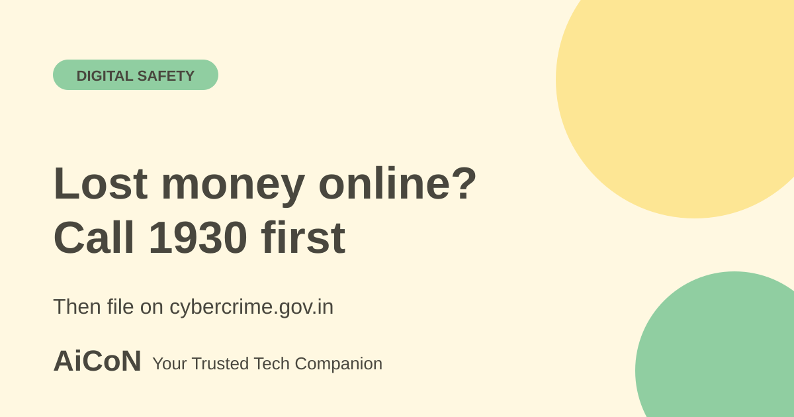

Lost money online? Call 1930 in the first hour
If money has left your account in an online scam, act fast. Call the national helpline 1930 and file a complaint on the official cybercrime portal. This guide gives the order of steps, what to keep ready and what not to do.

What is 1930?
1930 is a toll-free helpline run under the Ministry of Home Affairs. The Press Information Bureau describes it as the number for immediate reporting of financial frauds. It also helps people lodge complaints on the National Cybercrime Reporting Portal at cybercrime.gov.in. The number was earlier 155260.
The same PIB note says such complaints are handled by the law enforcement agencies of the respective State or Union Territory. For a reader in Kerala, that means the report is passed on to the police system of the state. You do not need to find a particular police station before you call.
Why the first hour matters
Scammers usually move money quickly from one account to another. Reporting early gives banks and police a better chance to act before the money disappears. A Times of India report from Hyderabad describes cases where quick calls to 1930 helped withhold money.
What to keep ready
You do not need everything before you call. But if you can, note down these details:
- The amount, date and time of each payment.
- The transaction ID or UTR number from your bank or UPI app.
- Your bank name and the last digits of your account or card.
- The scammer's phone number, UPI ID, account number, website link or social media handle.
- Screenshots of chats, SMS, emails or payment screens. Do not delete them.
What to do, step by step
- Stop all further payments. Do not send "verification" or "release" money to anyone who contacts you after the fraud.
- Call 1930. Say clearly that you lost money in an online fraud and give the details above. Write down any complaint or acknowledgement number you are given.
- Tell your bank or card issuer at once. Use the bank's official helpline or app. Timing matters for liability as well. Read our bank fraud and RBI liability guide for the rules on unauthorised transactions.
- File on the portal immediately. The official financial-fraud FAQ says to complete the formal complaint within 24 hours after receiving the 1930 acknowledgement number. Use that acknowledgement when filing. Go to cybercrime.gov.in and choose "Report Other Cyber Crime". The MHA citizen manual lists online financial fraud under this section. Click "File a complaint".
- Register with your mobile number. The portal sends an OTP to verify the number. The manual says the OTP is valid for 30 minutes. Enter it only on the portal itself, never on a page that reached you by link or call.
- Fill in the incident details and add proof. Include transaction IDs and screenshots. Submit the form and save the acknowledgement.
- Keep your phone reachable. Police or the bank may contact you for more information. Verify the caller before you share anything, and never share an OTP or PIN.
Report Suspect is a different tool
The portal also has a "Report Suspect" option. It lets citizens report suspect identifiers: website URLs, WhatsApp numbers or Telegram handles, phone numbers, email IDs, SMS headers or numbers, and social media URLs. It is useful for warning the system about a fraud number or link. If you have already lost money, call 1930 and file a complaint as above. See our guide on searching the official Suspect Repository before you pay for the check-before-paying side.
Cost and limits
| Helpline 1930 | Toll-free, per PIB. |
|---|---|
| Portal | Government site. The pages checked mention no fee for filing. |
| Recovery | Not guaranteed. Outcome depends on how fast the money is traced and where it went. |
| Use only | The number 1930 and the .gov.in portal. |
Beware of "recovery agents"
After a fraud, fake recovery agents may call or message you. They ask for a fee, an OTP, a remote-access app or your bank login to "get the money back". The official pages checked list no paid recovery service. Treat any such request as a second scam. Do not install screen-sharing apps for anyone who contacts you first.
What changed since the short post?
The expanded guide adds bank reporting, proof to save, and the official requirement to complete the portal complaint within 24 hours after a 1930 acknowledgement. Fast reporting can help, but a refund is not guaranteed.
Frequently asked questions
Is calling 1930 enough?
1930 is for immediate reporting and for help with the portal complaint. The safest approach is to call, then also file on cybercrime.gov.in and inform your bank.
I am not sure it is a scam. Should I still report?
If money left your account after a suspicious call, link or message, report it. Do not wait to be certain.
Can I report without losing money?
Yes. Use Report Suspect on the portal for fraud numbers, links and handles. To check which SIMs are registered in your name, see our Sanchar Saathi guide.
What if the bank refuses to help?
Complain to the bank in writing first. Our RBI Ombudsman guide explains the next step.
Sources: Official financial-fraud FAQ (PDF), PIB: Ministry of Home Affairs on helpline 1930, National Cybercrime Reporting Portal, MHA citizen manual: Report Other Cyber Crime (PDF), Times of India report on quick calls to 1930. Checked 6 October 2026.